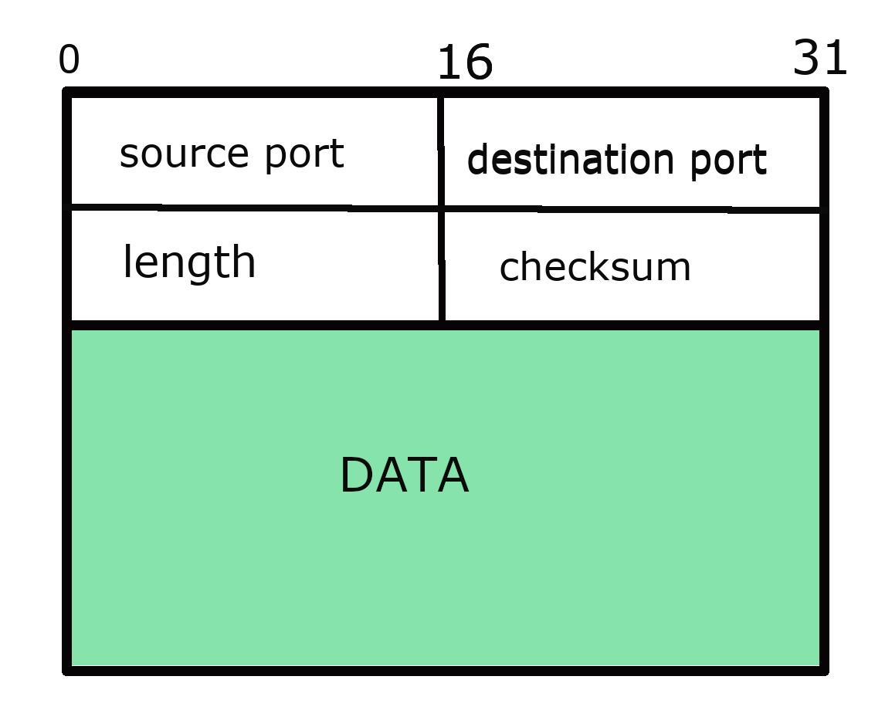

- application layer - e-mail protocols, web access protocols, file transfer protocols
- presentation layer - how data are represented independently of the hosts on which applications are running
- session layer - support for sessions between applications,synchronization facilities. Inserting checkpoints, which is useful in case of crash
- transport layer - protocols for directly supporting applications (reliable communications, support of real time streaming of data). Messages received from the upper level are breaked into smaller pieces suitable for the transmission. How many packets are received, which have to be retransmitted. TCP , UDP, ...
- network layer - protocols for routing a message through a computer network and handling congestions, IP (Internet protocol) is the most widely used network protocol
- data link layer - detecting and possibly correcting transmission errors, computing checksum and adding it to the frame
- physical layer - concerned about transmitting 0s and 1s. How many bits per second can be sent. Meaning and number of pins in network connectors, etc...
Distributed systems
Communication
Importance of communication
- Interprocess communication is an esential part of all distributed systems
- Exchange of information is based on low-level message passing
- What kind of exchange is used for nondistributed platforms?
- Communication must adhere to specific rules
- communication protocol - a set of rules according to which communication is carried out
- protocol is said to provide communication services
- two types of communication services:
- connection-oriented service - connection is established bofore exchanging messages and specific parameters of the used protocol , after exchange connection is terminated
- connectionless service - no setup in advance is needed
- protocols are easily explained if structured into layers
OSI reference model

- ISO OSI model (Open Systems Interconnection Reference Model)
- OSI is only refernce model and protocols developed for OSI model have never been widely used
- however OSI model is useful for understanding computer networks
OSI model
Internet protocol suite
- application layer - layer in which high level protocols operate such as e-mail protocols, web access protocols, file transfer protocols (HTTP, HTTPS, FTP, IMAP, POP, SSH, SMTP, Telnet,...)
- transport layer - provides a channel for the communicaton needs of applications (TCP , UDP, DCCP, ...)
- internet layer - provides uniform networking interface for exchanging datagrams, protocols for routing a message through a computer network. IP (Internet protocol) is the primary protocol in this scope (IPv4, IPv6, ICMP, ...)
- link layer - includes protocols used to describe local network topology and corresponds to corresponds to the physical and data link layers of OSI model MAC (Ethernet, Wi-Fi, DSL, ISDN, FDDI),...
standard network model used for internet which has fewer rigidly defined layers then OSI, easier fit for real-world protocols

Middleware protocols
- Middleware should be mostly applications which are mostly in the application layer
- general purpose protocols offered for other applications
- DNS Domain Name System - distributed service used to lookup a network addresses associated with a name
- translates more readable domain names to IP addresses
- for instance www.dhbw.de - > 141.31.235.50 you can try ping dhbw.de
- Example Google Public DNS offered to internet users worldwide - IP addresses 8.8.8.8 and 8.8.4.4 are used for IPv4 service,
- authentication and authorization protols could be example of middleware protocols
UDP (User Datagram Protocol)
- UDP is a simple transport protocol which extends host-to-host
delivery of packets
- connectionless protocol which belongs to the transport layer
- abstract port numbers used to identify which processes communicate
- port numbers hold for a single host
- that's why pair port, host-ip is used for demultiplexing in UDP
- unreliable, unordered delivery
UDP protocol
- source port
- destination port
- length of UDP segment including header
- checksum has a goal to detect "errors" (flipped) bits in segments
- data application data (payload)
- Why to use UDP protocol?
- no connection (no delay)
- no connection state at sender (reciever)
- small header size
- no congestion control
UDP datagram (packet) consists of the following fields

TCP protocol
- TCP is a connection-oriented protocol which belongs to the transport layer
- connection is maintained from the beginning till the end of exchange
- handshaking - exchange of control messages - sender, receiver state before data exchange
- to agree to establish connection
- to agree on connection parameters
- full duplex data- bi directional data flow in same connection
TCP dataram
TCP datagram structure
- source port
- destination port
- sequence number
- acknowledgement number
- flags indicating specific meaning of other fields
- receive window size of the window that receiver is willing to receive
- checksum has a goal to detect "errors" (flipped) bits in segments
- options which are of variable size
- data application data (payload)
- Why to use TCP protocol?
- reliable data transfer - not received packets are sent again
- flow control
- congestion control
TCP datagram (packet) consists of the following fields
Sinergy of protocols (HTTP,FTP, TCP/IP, ...)
- HTTP - Hyper Text Transfer Protocol is an appplication layer protocol
- TCP - is a transport layer protocol
- IP - is a network layer protocol
- an analogy for better explanation
- IP could be thought of as a high-way
- TCP and UDP as different types of trucks
- HTTP, SMTP, FTP and other application protocols as a load that trucks transport
These protocols work together to enable web transfers

Socket programming
- many distributed systems built on top of the simple message-oriented model offered by the transport layer
- socket is conceptually a communication end point
- to which an application can write data to be sent over an underlying network
- from which incoming data can be read
- socket makes an abstraction over the actual port that is used by the local operating system for a specific transport protocol
Socket operations for TCP/IP
| Operation | Description |
|---|---|
| socket | Create a new communication end point |
| bind | Attach a local address to a socket |
| listen | tell operating system what the maximum number of pending connection requests should be |
| accept | Block caller until a connection request arrives |
| connect | Actively attempt to establish a connection |
| send | Send some data over the connection |
| receive | Receive some data over the connection |
| close | Release the connection |
Connection-oriented communication using sockets

Java Sockets - server side
public class HelloServer {
public static void start(int port)){
serverSocket = new ServerSocket(port);
clientSocket = serverSocket.accept();
PrintWriter out = new PrintWriter(clientSocket.getOutputStream(), true);
BufferedReader in = new BufferedReader(new InputStreamReader(clientSocket.getInputStream()));
String hellogreeting = in.readLine();
if ("Hello server".equals(hellogreeting)) {
out.println("Hello Client");
}
else {
out.println("Unknown greeting");
}
}
}
Java Sockets - client side
public class HalloClient {
public void contactServer(String ip, int port) {
clientSocket = new Socket(ip, port);
PrintWriter out = new PrintWriter(clientSocket.getOutputStream(), true);
BufferedReader in = new BufferedReader(new InputStreamReader(clientSocket.getInputStream()));
out.println("Hello server");
String resp = in.readLine();
System.out.println(resp);
}
Socket example from the oracle documentation
- KnockKnock game
- 3 classes:
- KnockKnockServer
- KnockKnockClient
- KnockKnockProtocol